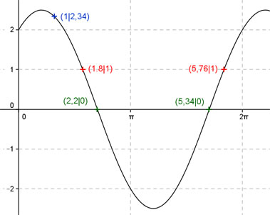

Aufgabe 223 Berechnen Sie die Amplitude von: y = (3/2) sin x + 2 cos x x 1 1,8 oder 5,76 y 2,34 1 Amplitude = 2,5 (Berechnung siehe unten); Periode = 2π Berechnung der Nullstellen: 0 = (3/2) sin x + 2 cos x |-2 cos x -2 cos x = (3/2) sin x |:cos x sin x sin x -2 = 1,5 --------- mit ------- = tan x cos x cos x -2 = 1,5 tan x |:1,5 2 tan x = - ----- --> 1,5 2 arc tan - ---- = x ---> x = -0,927 gerundet, 1,5 liegt nicht im Bereich zwischen 0 und 2π. x1 = (π - 0,927) = 2,2 gerundet oder 126,05°. x2 = (2,2 + π) = 5,34 gerundet oder (180° + 126,05) = 306,05°.  Berechnung der Amplitude A: Sie tritt an den Stellen 5,34 - 2,2 x = 2,2 + (-------------) = 3,77 oder 216° oder 2 bei (2,2 - π/2) = 0,63 oder 36° gerundet auf. Amplitude = f(36°, 216°) = = |(3/2) sin 36° + 2 cos 36°| = = |(3/2) sin 216° + 2 cos 216°| = = |-0,88 - 1,62| = 2,5